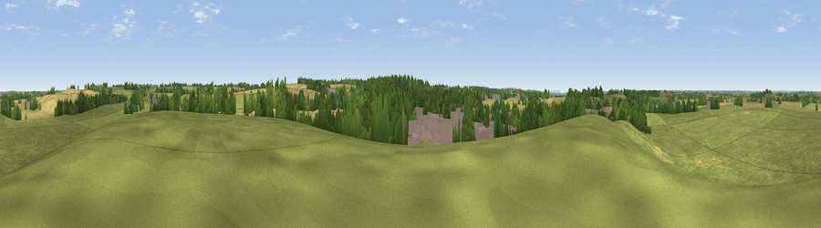

Viewpoint near Lighthorne
#35570 in England · top 71% of its area beats it · near LighthorneWhere it is
The exact computed spot (SP 34175 58225). Click the marker for map links.
The view, rendered

A 360° render of this exact spot computed from the terrain model, tree cover and land cover — summer colours, afternoon light, calibrated against photographs of famous viewpoints. Real trees, hedges and buildings will differ in detail.
The panorama
Grey silhouette: terrain skyline in each direction (720 bearings, Earth curvature and refraction included). Dashed green: skyline with trees (+15 m) and buildings (+8 m) as obstacles. Blue strip: how far the ground is visible on each bearing.
Where the view opens
Wedge length = distance to the farthest visible ground on that bearing (vegetation-aware). Rings at 10, 25 and 50 km.
What fills the view
58% grassland · 21% cropland · 15% woodland · 6% built-up
Angular shares of the visible panorama (visual magnitude), not map area. Landscape diversity 0.48 (0–1 Shannon).
Key numbers
More beautiful places nearby
The staircase of upgrades: each row has a higher view potential than everything closer. Driving times are estimates from straight-line distance, calibrated against real road routing — check an actual route before setting out.
| Place | Direction | Drive | Score |
|---|---|---|---|
| Viewpoint near Harbury | NNE · 1 km | ~4 min | 37.5 |
| Crown Hill | N · 5 km | ~10 min | 41.7 |
| Viewpoint near Northend | SE · 8 km | ~16 min | 65.3 |
| Viewpoint near Northend | SE · 8 km | ~17 min | 66.0 |
| Viewpoint near Northend | SE · 9 km | ~17 min | 69.7 |
| Viewpoint near Northend | SE · 9 km | ~18 min | 70.3 |
| Viewpoint near Radway | SSE · 11 km | ~20 min | 71.7 |
| Viewpoint near Ilmington | SW · 21 km | ~35 min | 72.6 |
52.22118, -1.50115 · source: screening · position refined by local search. Computed location — check access rights before visiting.